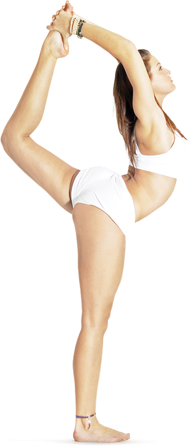

<section class="section classes-section page">
	<div class="inner">
		<div class="container ">
			<div class="menu">
				<button class="menu__wrapper">
					<div class="menu__burger">
						<div></div>
						<div></div>
						<div></div>
					</div>
					<div class="menu__text">
						Меню
					</div>
				</button>
			</div>
			<div class="section-title">
				<div class="section-title__inner wow bounceInDown">
					Направления и классы
				</div>

			</div>
			<div class="phone">
				<a href="tel:+7 (812) 345-56-97">+7 (812) 345-56-97</a>
			</div>
			<div class="lotos-logo">
				
				<div class="tabs sort__tabs">
					<ul>
						<li class="sort__tab sort__tab--active tab tab--active"><a href="#">Для начинающих</a></li>
						<li class="sort__tab tab"><a href="#">Аштанга Виньяса</a></li>
						<li class="sort__tab tab"><a href="#">Универсальная</a></li>
						<li class="sort__tab tab"><a href="#">Кундалини</a></li>
						<li class="sort__tab tab"><a href="#">Айенгара</a></li>
						<li class="sort__tab tab"><a href="#">Терапия</a></li>
					</ul>
				</div>
			</div>
			<div class="girl">
				</div>
			<div class="central-text">

				<div class="central-text__title">Yoga —</div>
				<div class="tab-content sort__content">
					<article class="tab-item soft__tab-item tab-item--active soft__tab-item--active">
						<div class="central-text__subtitle">Для начинающих</div>
						<p class="central-text__text">Йога для начинающих рассчитана на тех, кто до этого никогда ей не занимался и
							требует обучения. Такой программный комплекс существует и в нашем центре.</p>
					</article>
					<article class="tab-item soft__tab-item">
						<div class="central-text__subtitle">Аштанга Виньяса</div>
						<p class="central-text__text">Одна из современных синкретичных систем хатха-йоги. Основателем этой школы
							являлся Паттабхи Джойс. Согласно Джойсу, йогу не надо приспосабливать к слабости и несовершенству
							практикующего, а наоборот, практикующий должен развить себя до соответствия идеалам йоги.
						</p>
					</article>
					<article class="tab-item soft__tab-item">
						<div class="central-text__subtitle">Универсальная</div>
						<p class="central-text__text">Универсальная йога — это итог научного исследования Андрея Лаппы (Киев),
							систематизация мирового опыта практики йоги. Эта тренировочная система вобрала в себя всё лучшее из самых
							сильных и интересных школ йоги, таких как Аштанга Виньяса, Айенгар-йога, Тибетская Гималайская йога,
							даосские стили, а также авторские методики, не встречающиеся ни в одной другой системе.</p>
					</article>
					<article class="tab-item soft__tab-item">
						<div class="central-text__subtitle">Кундалини</div>
						<p class="central-text__text">Кундали́ни-йо́га — одно из направлений
							йоги, система упражнений, призванная поднять энергию кундалини из основания позвоночника с помощью
							регулярной практики медитации, пранаям, комплексов асан и пения мантр. Энергия кундалини должна поэтапно
							пройти по всем последующим чакрам вплоть до высшей, где должно произойти её слияние с божеством,
							а также и прекращение собственного сознания йогина.
						</p>
					</article>
					<article class="tab-item soft__tab-item">
						<div class="central-text__subtitle">Айенгара</div>
						<p class="central-text__text">Айенгар-йога основное внимание уделяет правильному положению тела, чтобы оно
							могло гармонично развиваться и стать анатомически безупречным. Характерной особенностью метода является
							статичное выполнение асан с необходимыми опорами. Другой характерной чертой метода является подробное,
							детальное объяснение каждой позы и индивидуальный подход к каждому практикующему</p>
					</article>
					<article class="tab-item soft__tab-item">
						<div class="central-text__subtitle">Терапия</div>
						<p class="central-text__text">Йогатерапия - метод натурального, естесственного оздоровления, где
							синтезируется знание современной медицины и физиологии с древними йогическими знаниями о человеке - то
							есть йогу применяют как способ лечения.</p>
					</article>
				</div>

				<p class="central-text__text central-text__text--last">Мы предлагаем посетить бесплатное вводное занятие,
					чтобы узнать, почему так много
					людей занимаются йогой и придерживаются здорового образа жизни.
				</p>
				<button class="central-text__button">
					<div class="central-text__circle"></div>
					<div class="central-text__button-text">
						Записаться онлайн
					</div>
				</button>
			</div>
			<div class="number-page">
				<div class="number-page__this">02</div>
				<div class="number-page__all">-08</div>
			</div>
			<div class="social">
				<ul>
					<li><a href="#">vk</a></li>
					<li><a href="#">fb</a></li>
					<li><a href="#">inst</a></li>
				</ul>
			</div>
			<div class="next-page">
				<a class="next-page__text" href="#third">Пробное занятие<div class="next-page__button">
						<svg version="1.1" width="6px" height="6px" xmlns="http://www.w3.org/2000/svg"
							xmlns:xlink="http://www.w3.org/1999/xlink" xml:space="preserve" viewBox="0 0 100 100"
							preserveAspectRatio="none">

							<polygon fill="#fff" points="0,100 50,0 100,100" />
						</svg>
					</div></a>

			</div>
		</div>
	</div>
</section>